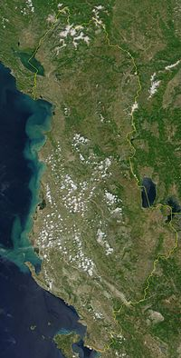

Gjeografia
Shqipëria kufizohet nga Mali i Zi në veriperëndim, Kosova në veri, nga Maqedonia e Veriut në lindje dhe Greqia në jug. Në kufirin natyror perëndimor Shqipëria ka dalje të hapur në Detin Adriatik dhe në jugperëndim në Detin Jon. Gjatësia e vijës kufitare të Republikës së Shqipërisë është 1094 km, nga të cilat 657 km vijë kufitare tokësore, 316 km vijë bregdetare, 48 km vijë ndarëse përmes lumenjve dhe 73 km përmes liqeneve.Sipërfaqja e përgjithshme është 28.748 kilometra katrorë. Kryeqyteti i saj është Tirana.Gjatësia e përgjithshme e vijës kufitare është 1094 km, nga te cilat janë: 657 km (kufi tokësor), 316 km (kufi detar), 48 km (kufi lumor) dhe 73 km (kufi liqenor).Në veri e verilindje ka 529 km vijë kufitare me Malin e Zi, Kosovën dhe Maqedoninë e Veriut, ndërsa në jug e juglindje me Greqinë një vijë kufitare prej 271 km. Në perëndim Shqipëria laget nga Deti Adriatik e në jug-perëndim nga Deti Jon.
